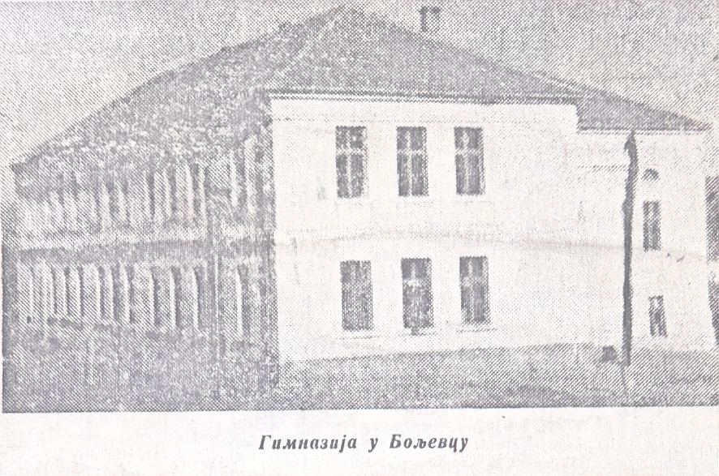

Историја
Територија општине Бољевац, смештена у живописној долини Црног Тимока и подножју мистичног Ртња, представља простор на којем се вековима укрштају путеви, културе и народи. Богати археолошки налази сведоче о континуираном насељавању од праисторије до данас, остављајући за собом трагове који обликују идентитет овог краја.
- Праисторија и античко доба: од пећина до римских путева
- Средњи век: на граници царстава
- Ослобођење и модерно доба: развој варошице
- Галерија
Праисторија и античко доба: од пећина до римских путева
Најстарији докази о људском присуству на овим просторима пронађени су у пећинама у околини Бољевца, где су откривена оруђа и предмети који припадају палеолиту и неолиту. Ови налази указују на постојање организованих заједница ловаца и сакупљача који су користили природне погодности овог краја.
У античко доба, ова област била је насељена трачким племенима, пре свих Трибалима. Са доласком Римљана у првим вековима нове ере, територија данашњег Бољевца постаје део провинције Горња Мезија (Moesia Superior). Римљани су препознали стратешки и рударски значај овог подручја, градећи путеве, утврђења и насеља. Трагови римских путева и војних логора и данас се могу пронаћи, а верује се да је и чувена царска палата Феликс Ромулијана (Felix Romuliana), иако се налази у близини Зајечара, била административно повезана са овим простором.
Средњи век: на граници царстава
Доласком Словена у 6. и 7. веку, подручје добија нови етнички карактер. Током средњег века, ова област је била поприште сталних сукоба и промена власти, налазећи се на граници између Византијског, Бугарског и Српског царства.
Први писани помен насеља под именом Бољевац потиче из турских пописа у 15. веку, иако се верује да је насеље постојало и знатно раније. У том периоду, Бољевац је био део Видинског пашалука унутар Османског царства. Живот под турском влашћу био је тежак, обележен устанцима и бунама, међу којима је најзначајнија била Тимочка буна из 1883. године, у којој су становници бољевачког краја имали истакнуту улогу.
Ослобођење и модерно доба: развој варошице
Настанак данашње варошице везује се за почетак 19. века, када су изграђене прве кафане на бољевачкој реци, где су се заустављали путници, који су путовали ка Зајечару и даље према истоку. Бољевац се први пут помиње у турском попису Видинског санџака, половином 15. века, када је пописано само 10 кућа. Насељавање места поред Арнауте почело је тридесетих година 19. века. У то време, становници Бољевца били су механџије, трговци и занатлије, који су се досељавали из околних места, много старијих од саме варошице. У то време било је 235 становника.

Прва школа креће са радом 1841. године, а 1844. Бољевац постаје седиште општине. У то време, заједно са истоименим суседним селом, Бољевац је имао 339 становника. Интезивније насељавање почиње средином 19. века, па 1860. године, Бољевац постаје средиште среза, а годину дана касније изграђена је црква Светог Илије.
Важни догађаји везани за културни живот Бољевца су отварање читаонице, 1869. године и оснивање дилетантског позоришта „Звезда“, 1874. године. За житеље Бољевца, посебан значај у историји има 10. септембар 1875. године, када је ово место Указом Кнеза Милана Обреновића, добило статус варошице. Овај датум се данас обележава као Дан општине.
Почетком 20. века, отворен је рудник Ртањ, у власништву породице Минх, чешких Јевреја, који су добили концесије за експлоатацију камног угља. Око угљенокопа, почиње да се гради и развија истзо имено рударско насеље. Почетком 20. века, односно 1902. године, успостављена је телефонска веза са Зајечаром, а годину дана касније и са Параћином.
До почетка Првог светског рата, Бољевац је добио новчани завод, отворен је рудник Мрког угља Боговина, 1912. године израђена је пруга уског колосека Параћин – Зајечар, што је допринело интезивнијем развоју не само варошице, већ читавог краја.
По завршетку Великог рата, на темељима старе школе, која је била порушена, 1923. године изграђена је нова зграда, у којој се и данас одвија настава за основце. У време измедју два рата, Бољевац живи интезивнијим друштвеним, политичким и културним животом о чему сведочи постојање фудбалског клуба, соколског друштва, женских удружења. Први хотел, под називом „Јелена“, Бољевац је добио 1926. године. Подигао га је Сава Видојевић, угледни Бољевчанин тог времена и назвао по својој раној преминулој мајци.
У новијој историји, најинтезивнији развој забележен је седамдесетих година прошлог века, када су почеле да раде фабрике у металском комплексу, дрвној и текстилној индустрији и области грађевине.
Туризам, као посебна грана, почео се развијати седамдесетих година прошлог века, након затварања рудника на Ртњу.
Галерија